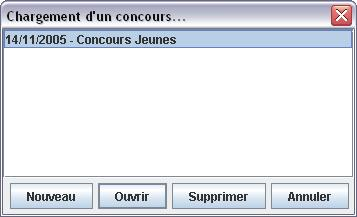
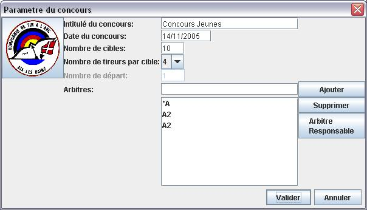
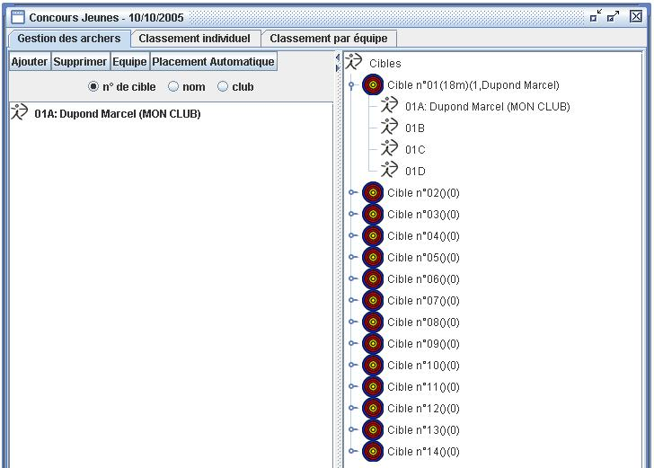

En sélectionnant Fichier, Créer/Restaurer…, puis Nouveau vous allez pouvoir créer un nouveau concours.

La boite de dialogue de paramètrage du concours va alors s'ouvrir. Certain champs peuvent être pré-renseigné. Vous pouvez rectifier/modifié les informations selon le besoin.
Ajout des Arbitres
Pour saisir les Arbitres, tapez le nom de l'Arbitre dans la case prévu à cet effet puis valider en appuyant sur la touche Entrée ou en cliquant sur Ajouter.
L'Arbitre Responsable
Pour choisir l'arbitre responsable, le sélectionner dans la liste des arbitres puis cliquez sur le bouton Arbitre Responsable.
Une étoile va alors apparaître devant son nom pour indiquer son statut.

Une fois les paramètres du concours validé la fenêtre de gestion des concurrents et du concours va alors s'ouvrir
Voir les rubriques appropriées pour réaliser les différentes étapes de gestion du concours.
